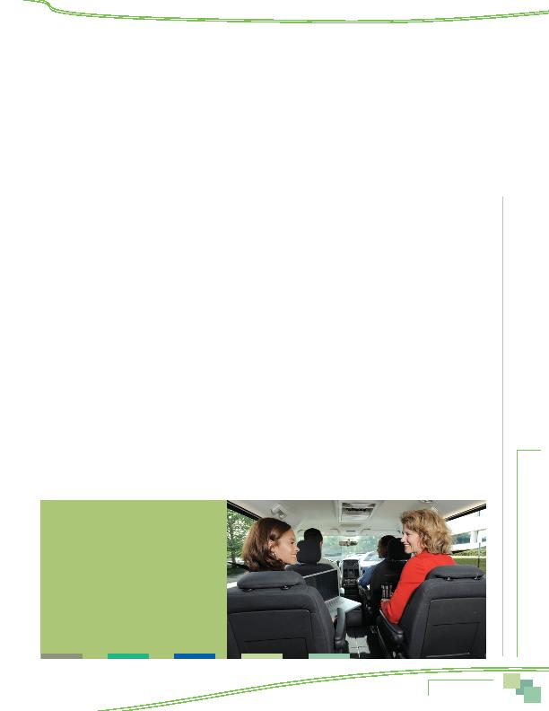

|

(TPB) at the Metropolitan Washington Council of Governments (COG) conducted the regional State of the Commute survey. Commuter Connections is funded by the District Department of Transportation, the Maryland Department of Transportation, and the Virginia Department of Transportation, with state and federal funds. commute assistance services in the Washington metropolitan region. The primary purpose of the program services is to inform commuters of the availability and benefits of traveling to and from work in a manner other than driving alone. Another purpose is to assist commuters to find alternatives that fit their commute needs. COG/TPB administers regional commuting services called Transportation Emission Reduction Measures (TERMs) with the goal to reduce vehicle trips, vehicle miles of travel, and emissions. outlines a detailed methodology and data collection activities to evaluate several regional commuter programs has been updated and revised every three years since 2001. One of the major additions to the framework was the State of the Commute (SOC) survey, which was added in 2001. The SOC is a random sample survey of employed persons in the Washington metropolitan region and serves several purposes. First, it documents trends in commuting behavior, such as commute mode shares and distance traveled, and attitudes about specific commuter transportation services available in the region. Assistance and Mass Marketing, two TERMs that might influ- ence the population-at-large as well as commuters who directly participate in Commuter Connections' programs. By asking commuters about sources of information on alternative modes and their reasons for choosing alternative modes for commuting, the survey examines how other commute alternative programs the region. commute travel based on the results, and is divided into several sections which highlight survey results. The survey questionnaire can be found in the Appendix section of this report. are compared against past results as measured in past survey reports. of 2010 SOC data, along with other TERM data collected between 2008 and 2011, is underway and will lead to a final TERM Analysis report that will be prepared and distributed in 2011. commute advertising, and commute assistance programs by employers WITH TRANSPORTATION SYSTEM modes receive from using alternative modes, 90% of respondents named at least one benefit and 53% reported two or more personal benefits. 55% of respondents cited saving money or gas as the top benefit, and eleven percent noted a related cost-saving benefit of reducing wear and tear on one's personal vehicle. Almost two in ten respondents Connections' program services is to inform commuters of the availability and benefits of traveling to and from work in a manner other than driving alone. |